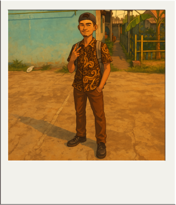

Hallo derrr..
namaku azril, panggil aje admin. sekolah di smk 3 perguruan cikini, hobi ku mancing. kenapa hobi mancing?ya karena seru aja gitu mancing sambil mikirin kehidupan,masalah,bengong, yang penting lari dari realita lah. tapi kalo mancing ga sendiri, biasanya sama temen temen. walau jarang dapet ikan tapi gpp..
sekarang aku kelas 11 smk, ambil jurusan di TKJ. anak komputer nih brayy, tapi karena itu aku jadi sering di bilang hacker, padahal mah bukan, kacau derr.. udah segitu aje.
